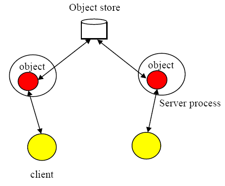

Chapter 10. Using JBoss Transaction Service
10.1. Introduction
This section covers JBoss Transaction Service and Transactional Objects for Java in detail, as well as how you can use it to construct transactional applications.
10.2. State management
10.2.1. Object States
JBoss Transaction Service remembers the state of an object for the purposes of recovery and persistence. In the case of recovery, the state represents some past state of the object. When persistence is involved, the state represents the final state of an object at application termination. Since recovery and persistence include common functionality, they are both implemented using the
Input/OutputObjectState and Input/OutputBuffer classes.
The
InputBuffer class in Example 10.2, “InputBuffer” and the OutputBuffer classes in Example 10.1, “OutputBuffer Example” maintain an internal array into which instances of the standard Java types can be contiguously packed (unpacked) using the pack (unpack) operations. This buffer is automatically resized as required. The instances are all stored in the buffer in a standard form called network byte order, making them machine-independent.
Example 10.1. OutputBuffer Example
public class OutputBuffer { public OutputBuffer (); public final synchronized boolean valid (); public synchronized byte[] buffer(); public synchronized int length (); /* pack operations for standard Java types */ public synchronized void packByte (byte b) throws IOException; public synchronized void packBytes (byte[] b) throws IOException; public synchronized void packBoolean (boolean b) throws IOException; public synchronized void packChar (char c) throws IOException; public synchronized void packShort (short s) throws IOException; public synchronized void packInt (int i) throws IOException; public synchronized void packLong (long l) throws IOException; public synchronized void packFloat (float f) throws IOException; public synchronized void packDouble (double d) throws IOException; public synchronized void packString (String s) throws IOException; };
Example 10.2. InputBuffer
public class InputBuffer { public InputBuffer (); public final synchronized boolean valid (); public synchronized byte[] buffer(); public synchronized int length (); /* unpack operations for standard Java types */ public synchronized byte unpackByte () throws IOException; public synchronized byte[] unpackBytes () throws IOException; public synchronized boolean unpackBoolean () throws IOException; public synchronized char unpackChar () throws IOException; public synchronized short unpackShort () throws IOException; public synchronized int unpackInt () throws IOException; public synchronized long unpackLong () throws IOException; public synchronized float unpackFloat () throws IOException; public synchronized double unpackDouble () throws IOException; public synchronized String unpackString () throws IOException; };
Example 10.3. OutputObjectState
class OutputObjectState extends OutputBuffer { public OutputObjectState (Uid newUid, String typeName); public boolean notempty (); public int size (); public Uidpublic class InputBuffer { public InputBuffer (); public final synchronized boolean valid (); public synchronized byte[] buffer(); public synchronized int length (); /* unpack operations for standard Java types */ public synchronized byte unpackByte () throws IOException; public synchronized byte[] unpackBytes () throws IOException; public synchronized boolean unpackBoolean () throws IOException; public synchronized char unpackChar () throws IOException; public synchronized short unpackShort () throws IOException; public synchronized int unpackInt () throws IOException; public synchronized long unpackLong () throws IOException; public synchronized float unpackFloat () throws IOException; public synchronized double unpackDouble () throws IOException; public synchronized String unpackString () throws IOException; };
Example 10.4. InputObjectState
class InputObjectState extends InputBuffer { public InputObjectState (Uid newUid, String typeName, byte[] b); public boolean notempty (); public int size (); public Uid stateUid (); public String type (); };
The Example 10.4, “InputObjectState” and Example 10.3, “OutputObjectState” classes provides all the functionality of the
InputBuffer and OutputBuffer classes, through inheritance. They also add two additional instance variables that signify the Uid and type of the object for which the InputObjectState or OutputObjectState instance is a compressed image. These are used when accessing the object store during storage and retrieval of the object state.
10.2.2. The Object Store
The Object Store provided with JBoss Transaction Service has a fairly restricted interface so that it can be implemented in a variety of ways. For example, object stores may reside in shared memory, in a local file system, or in a remote database. More complete information about the Object Stores available in JBoss Transaction Service can be found in the Appendix.
Note
As with all JBoss Transaction Service classes, the default Object Stores are pure Java implementations. You need to use native methods to access the shared memory and other more complex object store implementations.
All of the object stores hold and retrieve instances of the
InputObjectState and OutputObjectState classes, which are named by the Uid and Type of the object that they represent. States are read using the read_committed method and written by the system using the write_uncommitted method. Normally, new object states do not overwrite old object states, but are written to the store as shadow copies. These shadows replace the original only when the commit_state method is invoked. All interaction with the object store is performed by JBoss Transaction Service system components as appropriate, hiding the existence of any shadow versions of objects from the programmer.
public class ObjectStore { public static final int OS_COMMITTED; public static final int OS_UNCOMMITTED; public static final int OS_COMMITTED_HIDDEN; public static final int OS_UNCOMMITTED_HIDDEN; public static final int OS_UNKNOWN; /* The abstract interface */ public abstract boolean commit_state (Uid u, String name) throws ObjectStoreException; public abstract InputObjectState read_committed (Uid u, String name) throws ObjectStoreException; public abstract boolean write_uncommitted (Uid u, String name, OutputObjectState os) throws ObjectStoreException; . . . };
When a transactional object is committing, it needs to make certain state changes persistent, so that it can recover in the event of a failure and either continue to commit, or rollback. When using Transactional Objects for Java, JBoss Transaction Service manages this persistence automatically. To guarantee ACID properties, these state changes are flushed to the persistence store implementation before the transaction commits. Otherwise, the application assumes that the transaction has committed, even though the state changes may still exist within an operating system cache, vulnerable to a system failure. By default, JBoss Transaction Service flushes such state changes. As a trade-off, this behavior can impose a significant performance penalty on the application. To prevent transactional object state flushes, set the
com.arjuna.ats.arjuna.objectstore.objectStoreSync variable to OFF.
10.2.3. StateManager
The JBoss Transaction Service class
StateManager manages the state of an object and provides all of the basic state-management support mechanisms. StateManager creates and registers appropriate resources for persistence and recovery of the transactional object. If a transaction is nested, then StateManager propagates these resources between child transactions and their parents during the commit phase.
Objects in JBoss Transaction Service might be recoverable, persistent, both, or neither. If recoverable,
StateManager tries to generate and maintain appropriate recovery information for the object, storing the information in instances of the Input/OutputObjectState class. The lifetimes of these objects are assumed to be shorter than the application which created them. Recoverable and persistent objects are assumed to live longer than the applications that created them, so StateManager loads or unloads persistent states for the object by calling the activate or deactivate method. Objects which are neither recoverable nor persistent do not have any state data stored.
public class ObjectStatus { public static final int PASSIVE; public static final int PASSIVE_NEW; public static final int ACTIVE; public static final int ACTIVE_NEW; public static final int UNKNOWN_STATUS; }; public class ObjectType { public static final int RECOVERABLE; public static final int ANDPERSISTENT; public static final int NEITHER; }; public abstract class StateManager { public synchronized boolean activate (); public synchronized boolean activate (String storeRoot); public synchronized boolean deactivate (); public synchronized boolean deactivate (String storeRoot, boolean commit); public synchronized void destroy (); public final Uid get_uid (); public boolean restore_state (InputObjectState, int ObjectType); public boolean save_state (OutputObjectState, int ObjectType); public String type (); . . . protected StateManager (); protected StateManager (int ObjectType, ObjectName attr); protected StateManager (Uid uid); protected StateManager (Uid uid, ObjectName attr); . . . protected final void modified (); . . . }; public class ObjectModel { public static final int SINGLE; public static final int MULTIPLE; };
If an object is recoverable or persistent,
StateManager invokes the save_state method during the deactivation method. The restore_state is called during the activate. The type is called at various points during the execution of the application. The programmer must implement these methods, since StateManager does not have access to a runtime description of the layout of an arbitrary Java object in memory. However, the capabilities provided by InputObjectState and OutputObjectState classes simplify the writing of these routines. For example, the save_state implementation for a class Example that had member variables called A, B and C might adhere to Example 10.5, “save_state Example”
Example 10.5. save_state Example
public boolean save_state ( OutputObjectState os, int ObjectType ) { if (!super.save_state(os, ObjectType)) return false; try { os.packInt(A); os.packString(B); os.packFloat(C); return true; } catch (IOException e) { return false; } }
To support crash recovery for persistent objects, all
save_state and restore_state methods of user objects must call super.save_state and super.restore_state.
Note
The
type method determines the location in the object store where the state of instances of that class will be saved and ultimately restored. This can be any valid string. However, avoid using the hash character #, which is reserved for special directories required by JBoss Transaction Service.
The
get_uid method of StateManager provides read-only access to an object’s internal system name. The value of the internal system name can only be set when an object is created,by providing it as an explicit parameter or by generating a new identifier when the object is created.
The
destroy method removes the object’s state from the object store. This is an atomic operation, which only removes the state if its invoking transaction commits. The programmer must guarantee exclusive access to the object before invoking this operation.
Since object recovery and persistence have complimentary requirements, the
StateManager class combines the management of both into a single mechanism. That is, it uses instances of the class Input/OutputObjectState both for recovery and persistence purposes. An additional argument passed to the save_state and restore_state operations allows the programmer to determine the purpose for which any given invocation is being made thus allowing different information to be saved for recovery and persistence purposes.
10.2.4. Object Models
JBoss Transaction Service supports two models for objects. Implementation of the state and concurrency controls depend on which model is used.
- Single
- The application only contains a single copy of the object The object resides within a single JVM, and all clients must address their invocations to this server. The single model provides better performance, but creates a single point of failure. In a multi-threaded environment, the object may not be protected from corruption if a single thread fails.
- Multiple
- Logically, a single instance of the object exists. Copies of the object are distributed across multiple JVMs. Performance suffers compared to the single model, better failure isolation is achieved.Multiple Object Model

The single model is the default. You can override this on a per-object basis by providing an appropriate instance of the
com.arjuna.ats.arjuna.gandiva.ObjectName class when you create your object.
Note
You can change the model before any instantiation of the object There is no need for it to remain the same during the object's lifetime.
Use the following method to provide a suitable
ObjectName class. Refer to Example 10.6, “Object Models” for an example.
- Create a new instance of
ObjectName. - Set the object model attribute using the
com.arjuna.ats.arjuna.ArjunaNames.StateManager_objectModel()name.
Example 10.6. Object Models
{ ObjectName attr = new ObjectName(“SNS:myObjectName”); attr.setLongAttribute(ArjunaNames.StateManager_objectModel(), ObjectModel.SINGLE); AtomicObject obj = new AtomicObject(ObjectType.ANDPERSISTENT, attr); }
10.2.5. JBoss Transaction Service Method Reference
The JBoss Transaction Service class
StateManager manages the state of objects and provides all of the basic support mechanisms required for recovery, persistence, or both. Some operations must be defined by you. These operations are: save_state, restore_state, and type.
- boolean
save_state(OutputObjectStatestate, intObjectType) - Invoked to save the state of an object for future use, for recovery or persistence. The
ObjectTypeparameter indicates the reason for invocation. This allows you to save different pieces of information into theOutputObjectStatesupplied as the first parameter, depending on whether recovery or persistence is desired. For example, pointers to other JBoss Transaction Service objects may be saved as pointers for recovery, but as UIDs for persistence. TheOutputObjectStateclass provides convenient operations, so that you can save instances of all of the basic types in Java. To support crash recovery for persistent objects allsave_statemethods need to callsuper.save_state.Note
Thesave_statemethod assumes that an object is internally consistent and that all variables saved have valid values. Write and test your code to be sure this is true. - boolean
restore_state(InputObjectStatestate, intObjectType) - Restores an object to the specified state. The second parameter allows different interpretations of the supplied state. To support crash recovery for persistent objects all
restore_statemethods need to callsuper.restore_state. - String
type () - The JBoss Transaction Service persistence mechanism needs a way to determine the type of an object as a string, so that it can save and restore the state of the object. By convention, the position of the class in the hierarchy is used. For example,
StateManager/LockManager/Object.Note
Thetypemethod determines the location of the state of instances of a specified class are saved into the object store. This can actually be any valid string. However, avoid using the hash character #, which is reserved for special directories required by JBoss Transaction Service.
10.2.6. Example
Example 10.7, “Saving and Restoring an Object's State” shows a basic
Array class derived from the StateManager class. To illustrate saving and restoring of an object’s state, the highestIndex variable keeps track of the highest element of the array that has a non-zero value.
Example 10.7. Saving and Restoring an Object's State
public class Array extends StateManager { public Array (); public Array (Uid objUid); public void finalize ( super.terminate(); }; /* Class specific operations. */ public boolean set (int index, int value); public int get (int index); /* State management specific operations. */ public boolean save_state (OutputObjectState os, int ObjectType); public boolean restore_state (InputObjectState os, int ObjectType); public String type (); public static final int ARRAY_SIZE = 10; private int[] elements = new int[ARRAY_SIZE]; private int highestIndex; };
The
save_state, restore_state and type operations can be defined as follows:
/* Ignore ObjectType parameter for simplicity */ public boolean save_state (OutputObjectState os, int ObjectType) { if (!super.save_state(os, ObjectType)) return false; try { packInt(highestIndex); /* * Traverse array state that we wish to save. Only save active elements */ for (int i = 0; i <= highestIndex; i++) os.packInt(elements[i]); return true; } catch (IOException e) { return false; } } public boolean restore_state (InputObjectState os, int ObjectType) { if (!super.restore_state(os, ObjectType)) return false; try { int i = 0; highestIndex = os.unpackInt(); while (i < ARRAY_SIZE) { if (i <= highestIndex) elements[i] = os.unpackInt(); else elements[i] = 0; i++; } return true; } catch (IOException e) { return false; } } public String type () { return '/StateManager/Array'; }
10.3. Lock Management and Concurrency Control
Concurrency control information within JBoss Transaction Service is maintained by locks. Some of these locks need to be used by multiple objects in different processes. They can be held in a lock store, similar to the object store used for state information. The lock store used with JBoss Transaction Service has a restricted interface which allows flexibility with regard to implementation. Lock stores can be implemented in shared memory, on the Unix file system in several different formats, or as a remotely accessible store.
Note
As with all JBoss Transaction Service classes, the default lock stores are pure Java implementations. If you want to use more complex lock implementations, you must use native methods.
Example 10.8. Example LockStore Class
public class LockStore { public abstract InputObjectState read_state (Uid u, String tName) throws LockStoreException; public abstract boolean remove_state (Uid u, String tname); public abstract boolean write_committed (Uid u, String tName, OutputObjectState state); };
10.3.1. Selecting a Lock Store Implementation
JBoss Transaction Service supports several different object store implementations. If the object model being used is Single, no lock store is required for maintaining locks, because the information about the object is not exported from it. However, if you use the Multiple model, different run-time environments may need to share concurrency control information. You can specify the implementation type of the lock store to use for all objects within a given execution environment using the
com.arjuna.ats.txoj.lockstore.lockStoreType property. This variable can be either:
- BasicLockStore
- This is an in-memory implementation which does not include support for sharing of stored information between execution environments. You can extend it to include this functionality, if needed.
- BasicPersistentLockStore
- This is the default implementation. It stores locking information within the local file system. Execution environments that share the same file store can share concurrency control information. The root of the file system into which locking information is written is the
LockStore/directory within the JBoss Transaction Service installation directory. To override this location, set thecom.arjuna.ats.txoj.lockstore.lockStoreDirproperty accordingly, or include the location in theCLASSPATH:How to Override the lockStoreDir Property
java -D com.arjuna.ats.txoj.lockstore.lockStoreDir=/var/tmp/LockStore myprogramjava –classpath $CLASSPATH;/var/tmp/LockStore myprogram
10.3.2. LockManager
The concurrency controller is implemented by the class
LockManager, which provides sensible default behavior that you can override if necessary. The setlock method is the primary interface to the concurrency controller. By default, the JBoss Transaction Service runtime system enforces strict two-phase locking, following a multiple reader, single writer policy on a per-object basis. You, as the programmer, control lock acquisition, since the LockManager class cannot predict whether an operation needs a read or write lock. Lock release, however, is normally under control of the system, requiring no action by the programmer.
The
LockManager class manages requests to set a lock on an object or to release a lock. However, since it is derived from StateManager, it can also control invocation of some of the inherited facilities. For example, if a request to set a write lock is granted, then LockManager invokes the modified method directly, since setting a write lock implies that the invoking method is about to modify the object. This may cause recovery information to be saved, if the object is recoverable. Successful lock acquisition also triggers invocation of the activate.
Therefore,
LockManager activates and deactivates persistent objects, and also registers Resources used for managing concurrency control. By driving the StateManager class, it also registers Resources for persistent and recoverable state manipulation and object recovery. You only set the appropriate locks, start and end transactions, and extend the save_state and restore_state methods of the StateManager class.
Example 10.9. LockResult Example
public class LockResult { public static final int GRANTED; public static final int REFUSED; public static final int RELEASED; }; public class ConflictType { public static final int CONFLICT; public static final int COMPATIBLE; public static final int PRESENT; }; public abstract class LockManager extends StateManager { public static final int defaultTimeout; public static final int defaultRetry; public static final int waitTotalTimeout; public synchronized int setlock (Lock l); public synchronized int setlock (Lock l, int retry); public synchronized int setlock (Lock l, int retry, int sleepTime); public synchronized boolean releaselock (Uid uid); /* abstract methods inherited from StateManager */ public boolean restore_state (InputObjectState os, int ObjectType); public boolean save_state (OutputObjectState os, int ObjectType); public String type (); protected LockManager (); protected LockManager (int ObjectType, ObjectName attr); protected LockManager (Uid storeUid); protected LockManager (Uid storeUid, int ObjectType, ObjectName attr); . . . };
You need to pass the type of lock required and the number of retries to acquire the lock,as parameters to the
setlock method. The type is either READ or WRITE. If a lock conflict occurs, one of the following scenarios will take place:
- If the retry value is equal to
LockManager.waitTotalTimeout, the thread which called thesetlockmethod is blocked until the lock is released, or the total timeout specified has elapsed. In the case of a time-out, a value ofREFUSEDis returned. - If the lock cannot be obtained initially,
LockManagerretries the specified number of times, waiting for the specified timeout value between each failed attempt. The default is 100 attempts, each attempt being separated by a 0.25 seconds delay.
If a lock conflict occurs, the lock request is timed out, to prevent deadlocks. A full deadlock detection scheme is not provided. If the requested lock is obtained, the
setlock method returns a value of GRANTED. Otherwise, a value of REFUSED is returned. You need to ensure that the remainder of the code for an operation is only executed if a lock request is granted. Refer to Example 10.10, “setlock Example” for a working example.
Example 10.10. setlock Example
res = setlock(new Lock(WRITE), 10); // Attempts to set a write // lock 11 times (10 retries) // before giving up. res = setlock(new Lock(READ), 0); // Attempts to set a read lock // 1 time (no retries) before // giving up. res = setlock(new Lock(WRITE); // Attempts to set a write lock // 101 times (default of 100 // retries) before giving up.
The concurrency control mechanism is integrated into the atomic action mechanism to ensure that as locks are granted on an object, appropriate information is registered with the currently running atomic action. This guarantees that the locks are released at the correct time, and removes the need to explicitly free locks which were acquired within atomic actions. However, if locks are acquired on an object outside of the scope of an atomic action, you must use the
releaselock method to release the locks.
10.3.3. Locking policy
Locks in JBoss Transaction Service are not special system types. They are, instead, instances of other JBoss Transaction Service objects. The
Lock class is derived from StateManager so that locks can be made persistent and can be named in a simple way. Furthermore, the LockManager class does not know about the semantics of the actual policy for granting lock requests. Instances of the Lock class maintain this information, and provide the conflictsWith method, which LockManager uses to determine whether two locks conflict. This separation allows you to derive new lock types from the basic Lock class and provides appropriate definitions of the conflict operations, allowing enhanced levels of concurrency.
public class LockMode { public static final int READ; public static final int WRITE; }; public class LockStatus { public static final int LOCKFREE; public static final int LOCKHELD; public static final int LOCKRETAINED; }; public class Lock extends StateManager { public Lock (int lockMode); public boolean conflictsWith (Lock otherLock); public boolean modifiesObject (); public boolean restore_state (InputObjectState os, int ObjectType); public boolean save_state (OutputObjectState os, int ObjectType); public String type (); . . . };
The
Lock class provides a modifiesObject method, which LockManager uses to determine a call or method is needed to grant a locking request. This allows locking modes other than simple read and write to be supported. The supplied Lock class supports the traditional multiple reader/single writer policy.
10.3.4. Object construction and destruction
JBoss Transaction Service objects can be either recoverable, persistent, both, or neither. Also, each object has a unique internal name. These attributes can only be set when that object is constructed. Therefore,
LockManager provides two protected constructors for use by derived classes, each of which fulfills a distinct purpose:
LockManager ()- Allows the creation of new objects, which have no prior state.
LockManager(intObjectType, ObjectNameattr)- Allows the creation of new objects, which have no prior state. The
ObjectTypeparameter denotes whether an object isrecoverable, recoverable and persistent (indicated byANDPERSISTENT) or neither (NEITHER). If an object is marked as being persistent, its state is stored in one of the object stores. Thesharedparameter only has meaning if the object isRECOVERABLE.; Ifattris not null and the object model isSINGLE(the default behavior), then the recoverable state of the object is maintained within the object itself. Otherwise, the state of the object is stored in an in-memory object store between atomic actions.Constructors for new persistent objects should make use of atomic actions within themselves. This will ensure that the state of the object is automatically written to the object store either when the action in the constructor commits, or, if an enclosing action exists, when the appropriate top-level action commits. LockManager(UidobjUid)- Allows access to the existing persistent object named in the
objUidparameter. The object's prior state, which is identified by the value of theobjUidparameter), is loaded from an object store automatically. LockManager(UidobjUid, ObjectNameattr)- Allows access to the existing persistent object named in the
objUidparameter. The object's prior state, which is identified by the value of theobjUid, is loaded from an object store automatically. If theattrparameter is not null, and the object model isSINGLE(the default behavior), then the object is not reactivated at the start of each top-level transaction.
The destructor of a programmer-defined class needs to invoke the inherited operation
terminate, to inform the state management mechanism that the object is about to be destroyed. Otherwise, unpredictable results may occur.
Because the
LockManager class inherits from StateManager, it passes any supplied ObjectName instances to the StateManager class. As such, you can set the StateManager object model as described earlier.